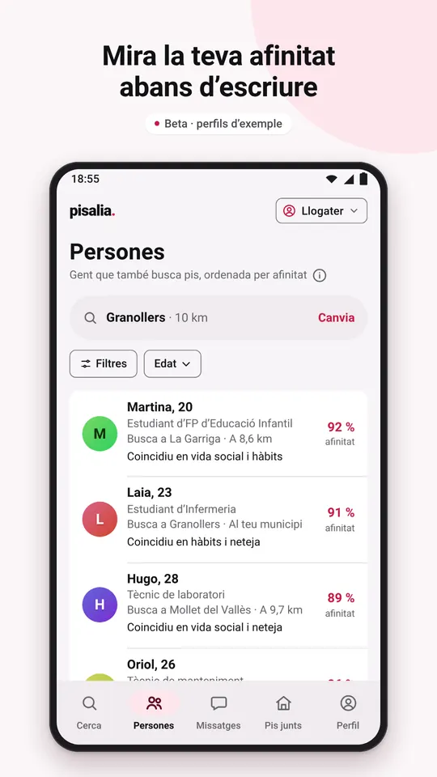
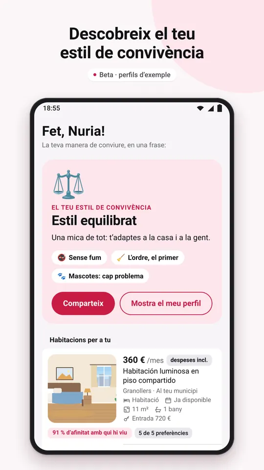
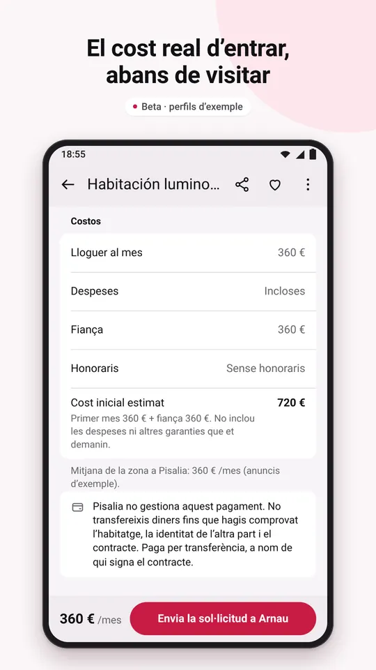
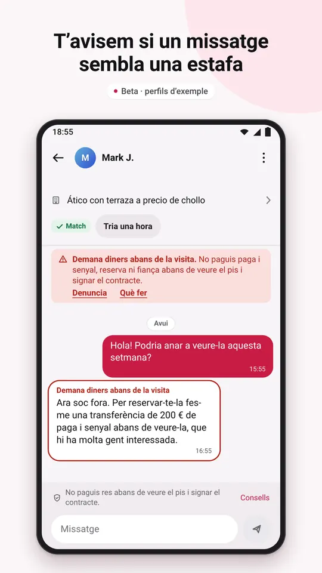
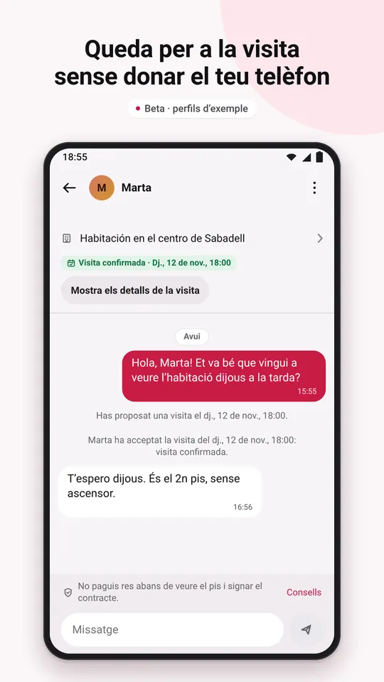
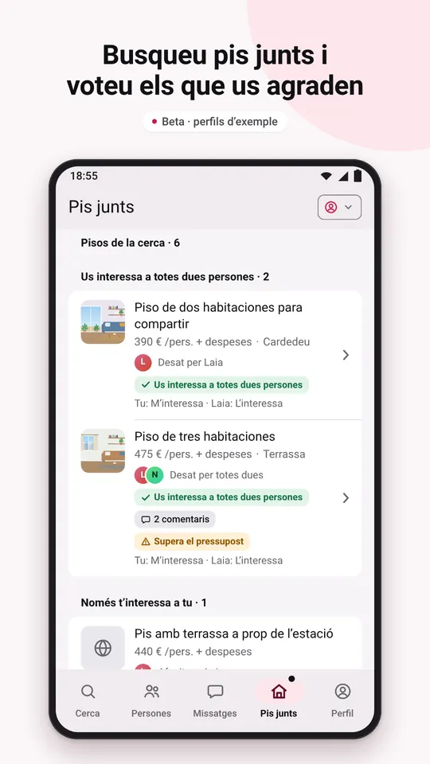
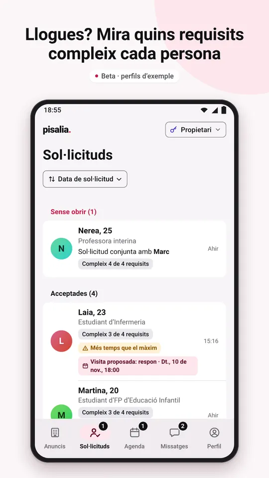
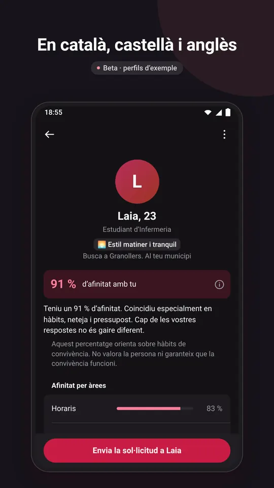

L’app per compartir pis
Troba habitació i gent amb qui conviure bé
Fes el test de convivència i mira la teva afinitat amb cada persona abans d’escriure-li. Per a gent de 18 a 30 anys que busca habitació o algú per al seu pis. Comencem per Catalunya.
- Gratis i sense publicitat
- En català, castellà i anglès
- Només per a majors de 18 anys
Aviat a Google PlayPrimer a Android. A iPhone, més endavant.
Vull provar la betaAviat obrirem una prova tancada a Android per a majors de 18 anys a Espanya: escriu-nos i t’avisarem.

Pisalia és en fase beta. La resta de perfils i anuncis són d’exemple, les comprovacions són simulades i les teves dades només es desen al teu mòbil: Pisalia encara no té servidors.
Com funciona, en 3 passos
- Tria què busques. Una habitació, persones per compartir pis, algú per a l’habitació lliure del teu pis o llogaters per al teu pis.
- Fes el test de convivència. 12 preguntes i una d’opcional sobre horaris, ordre, neteja, visites, soroll, mascotes o pressupost. Marca el que és molt important per a tu i el que t’és igual.
- Mira la teva afinitat i escriu. Cada persona surt amb la vostra afinitat i el que teniu en comú, i cada anunci, amb quantes de les teves preferències compleix. Envia una sol·licitud: si l’accepten, feu match i s’obre el xat.
Per a qui busca i per a qui anuncia
Si busques habitació o companys de pis
- Persones que busquen pis a prop teu, amb la vostra afinitat i el que teniu en comú.
- Habitacions en llista o al mapa, amb filtres per requisits i preferències.
- El cost real d’entrar a cada anunci: lloguer, despeses, fiança i cost inicial estimat. El que falta surt com a «No indicat».
- Visites: tria una de les hores que ofereix qui anuncia o proposa’n una altra.
- Pis junts: amb algú amb qui tens match, busqueu pis amb el vostre pressupost i zones, voteu els pisos, comenteu-los i envieu una sol·licitud conjunta.
Si llogues una habitació o un pis
- Publica la teva habitació o el teu pis amb fotos. Posa’l en pausa, renova’l o marca’l com a llogat.
- Mira cada candidat amb la seva afinitat i els requisits que compleix, i accepta’l o rebutja’l.
- Agenda: ofereix les hores en què es pot visitar el pis i organitza les visites.
- En publicar, l’app no deixa demanar el que la llei no permet cobrar al llogater, com els honoraris de l’agència.
Així és Pisalia
Captures de l’app a Android, amb perfils i anuncis d’exemple de la beta.







Seguretat i confiança
Avisos contra estafes al xat
El xat t’avisa si un missatge s’assembla a una estafa típica, com demanar diners abans de la visita, o si estàs a punt d’enviar un DNI, un IBAN o una targeta.
Llista de seguretat abans de pagar
Sis comprovacions que marques tu abans de pagar res, amb un consell per a cadascuna.
Denunciar i bloquejar
Des de qualsevol perfil, anunci o xat, sense avisar l’altra persona. A la beta, les denúncies es queden al teu mòbil i encara no les revisa ningú: si vols que en vegem una, ens la pots enviar per correu.
Revisió dels anuncis
Quan Pisalia tingui servidor, una persona revisarà cada anunci abans de publicar-lo. A la beta, els anuncis que veus són d’exemple i els teus es queden al teu mòbil.
Pisalia no cobra ni gestiona pagaments
Ni lloguers, ni fiances, ni senyals. No paguis res sense haver vist el pis i signat el contracte.
El teu telèfon, per a tu
Parleu pel xat de Pisalia i quedeu per a la visita sense donar el número.
Llegeix els consells contra les estafes de lloguer.
Les teves dades
A la beta, el que poses a l’app es desa només al teu mòbil. Pisalia no té publicitat, i aquest web no fa servir galetes ni analítica. Ho explica la política de privacitat.
Preguntes freqüents
Quant costa?
Res. Pisalia és gratis i no té publicitat.
Quan la puc descarregar?
Pisalia sortirà primer a Android, a Google Play. Aviat obrirem una prova tancada: si tens un mòbil Android, ets major de 18 anys i vius a Espanya, escriu-nos a info@pisalia.app i t’avisarem quan la puguis provar. La versió per a iPhone arribarà més endavant.
On funciona?
Pisalia és per a tot Espanya, però comencem per Catalunya. A la beta, els perfils i anuncis d’exemple són a la província de Barcelona.
Què és l’afinitat?
Un percentatge que compara les vostres respostes al test de convivència i té en compte el que cada persona marca com a molt important. T’explica el que teniu en comú i en què us diferencieu. És una orientació, no una garantia.
Què és Pis junts?
Si has fet match amb algú i voleu compartir pis, podeu buscar alhora: amb el vostre pressupost, zones i dates, deseu pisos, els voteu, els comenteu i envieu una sol·licitud conjunta a qui anuncia.
Pisalia cobra o gestiona el lloguer?
No. Pisalia només posa en contacte les persones: no cobra ni gestiona lloguers, fiances ni senyals, i no és part del contracte.
Qui la pot fer servir?
Només majors de 18 anys. Està pensada sobretot per a gent jove que estudia o treballa i busca habitació o companys de pis.
Com esborro el meu compte?
A l’app: Perfil → Elimina el meu compte. Si ja no tens l’app, ho pots demanar per correu: ho expliquem a Esborrar el teu compte.
Més dubtes? Mira el suport o escriu-nos a info@pisalia.app.
Vols provar-la abans que ningú?
Escriu-nos a info@pisalia.app des del correu del teu compte de Google i t’avisarem quan obrim la prova tancada d’Android.
Informació i ajuda
- Política de privacitatQuines dades fa servir Pisalia i quins són els teus drets
- Esborrar el teu compteDes de l’app o demanant-ho per correu, sense l’app
- SuportContacte, preguntes freqüents i consells de seguretat
- Condicions d’ús i normesEl que acceptes en fer servir Pisalia
- Dades del titularQui és el titular de Pisalia i com contactar-hi